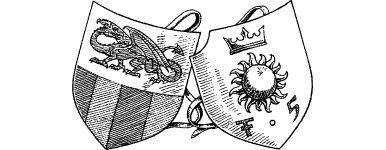

22
It is in the thirtieth hour of your air voyage that the Skyrider’s eagle-eyed lookout catches his first glimpse of Vadera. Word spreads quickly and a hubbub of excitement grips the dwarven crew as the flying ship draws ever closer to the fortified walls and turrets of the great northern Lencian port.
{kind=link}

Skilfully Bo’sun Nolrim lands the Skyrider on the paved courtyard in front of the Vadera Citadel, which has been cleared of crowds in expectation of your arrival. Awaiting you is a party of stern-faced Vadera officials who, with a minimum of fuss, escort you and Banedon directly to the court of King Sarnac.
‘We are honoured to welcome you once again to our city, Grand Master,’ says the silver-haired King. ‘My only regret is the reason for your visit. I’d have hoped our meeting would have been in less ominous circumstances.’
Formally you acknowledge the King’s greeting; then you turn to face the elderly man who is standing beside the King’s throne. You recognized him as soon as you entered the King’s chamber—he is Lord Ardan, an Elder Magi from Dessi, one of Lord Rimoah’s countrymen.
‘Well met, my lord,’ you say, and Ardan returns your greeting with a smile. Sadly, his smile soon fades when he says: ‘No doubt your able companion, Guildmaster Banedon, has told you of the rise of evil in Ixia. Dire news indeed, Grand Master, for it threatens our very existence, most especially the existence of our Lencian friends. If the Deathlord’s power is allowed to grow unchecked, Lencia will be the first Freeland state to suffer his wrath.’
‘I pledge to do all in my power to prevent such an outcome, my lord,’ you reply earnestly.
‘We have every faith in you, Lone Wolf,’ says King Sarnac, ‘and we shall help you accomplish your mission in whatever way we can.’ He signals to one of his silver-armoured bodyguards and the soldier leaves the chamber. He returns shortly in the company of another man, clad in the court uniform of a Guard Captain.
If you took part in the Battle of Cetza or have visited the city of Darke in any previous Lone Wolf adventures, 6 turn to 305.
If you did not, turn to 129.
Footnotes
[6] If you have not visited the city of Darke, only turn to Section 305 if you met Captain Prarg at the Battle of Cetza.